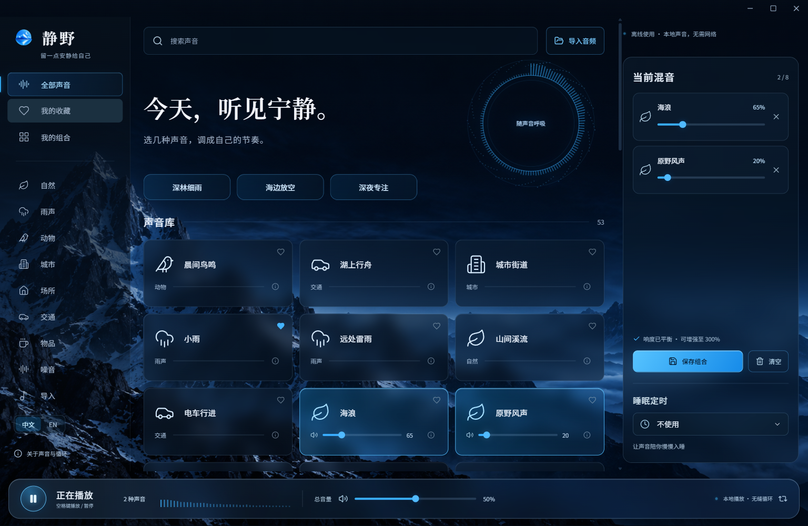

让这一刻，自然延续。
循环边界交叉淡化，减少突兀重启。最多混合 8 种声音，平衡每一路音量，再用睡眠定时轻轻收尾。
一点海浪，一点风。调整每一层的音量，再把喜欢的组合留到下次。

循环边界交叉淡化，减少突兀重启。最多混合 8 种声音，平衡每一路音量，再用睡眠定时轻轻收尾。
导入自己的录音，收藏喜欢的声音，保存命名方案。不需要账号，没有广告，应用不采集使用数据。
下载 ZIP 后完整解压，打开 QuietField-win32-x64/静野.exe 即可。请保留同目录所有文件，不需要安装或注册账号。
目前提供 Windows x64 版本；macOS、Linux、Android 和 iOS 暂无发行包。程序未签名，Windows 可能出现信誉提示，请从官方 GitHub 发布页下载。
完整声音库随包提供，很多是原始未压缩 WAV。网页只提供简短的压缩试听，桌面程序包含完整录音，使用时无需联网。
把新版本解压到新文件夹，保留 %APPDATA%/QuietField-Public 中的本地数据即可。中英文切换不打断播放。暂不支持云同步。
当然。可以用中文或英文提交 GitHub issue。问题反馈请附 Windows 版本与复现步骤；推荐音源请附原始页面及许可。